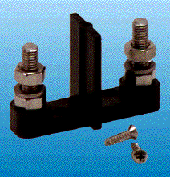
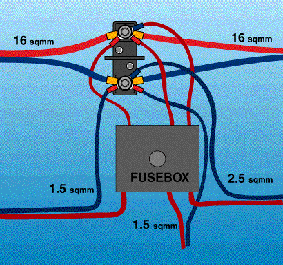

Power distrubution terminal
- Insignificant low contact resistance
- Separated pole to avoid shorts
- Strong - stands vibrations
- Use with standard M6 - 1/4" cable-shoes
Now it is possible to install power equipmet thato need high current and no voltage loss. Just use a big cable area all the way from the battery distribution terminal, and change the cable area, which fits into the units terminal block, as close as you can by use of the SureConnect3. This minimizes voltage drop. Connect to the battery by use of the SureConnect4 on the same briliant manner.
typical cabling arrangment
Can be mounted on any surface (wood - plastic - metal). Connect the wires by use of crimped or soldered standard cable-shoes. The spring washer included prevents loose connections and does not scratch the cable-shoe. To get maximum setting torque use a spanner to hold the lower nut. Protect with acid free vaseline.
SureConnect 3 - all in stainless steel - is equipped with mounting screws and soft locking washer. Article No. 20823.